🖼️ Gallery
Welcome to my gallery!
Photography is one of the ways I pay attention to the world. The images below are small records of places, people, and moments that have stayed with me. I hope you enjoy looking through them.
The Campus 求是园
Photos taken @ Zhejiang University
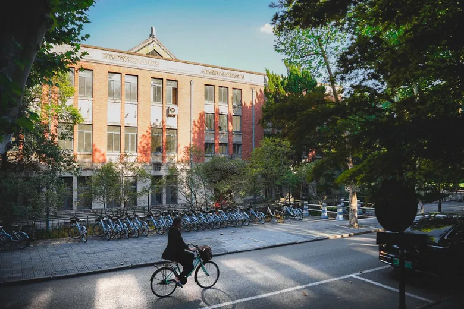
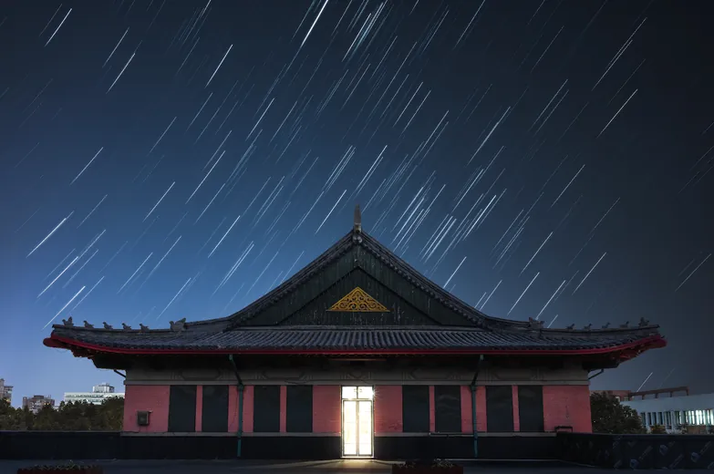
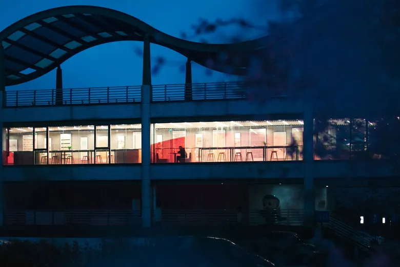
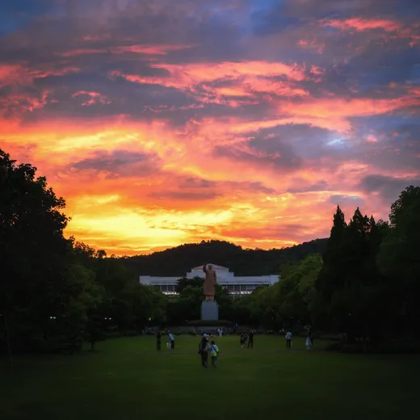
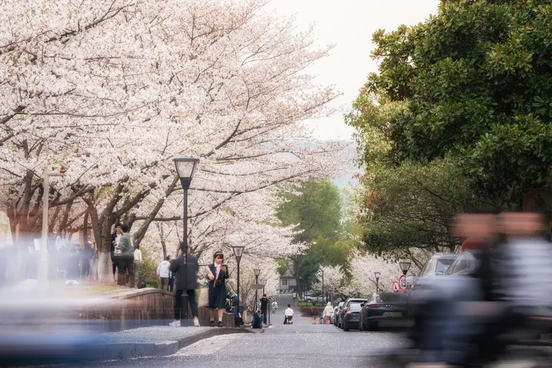
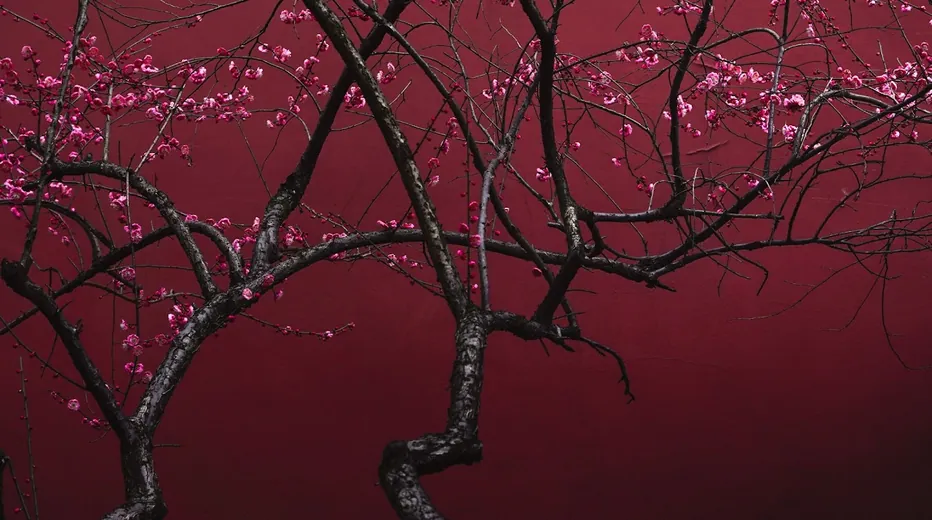
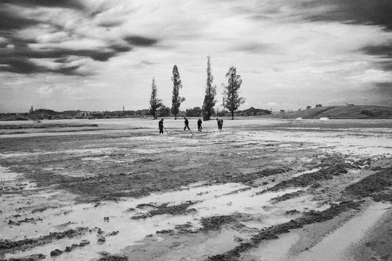
Pillowed by West Lake 一枕湖山
Photos taken in Hangzhou, China
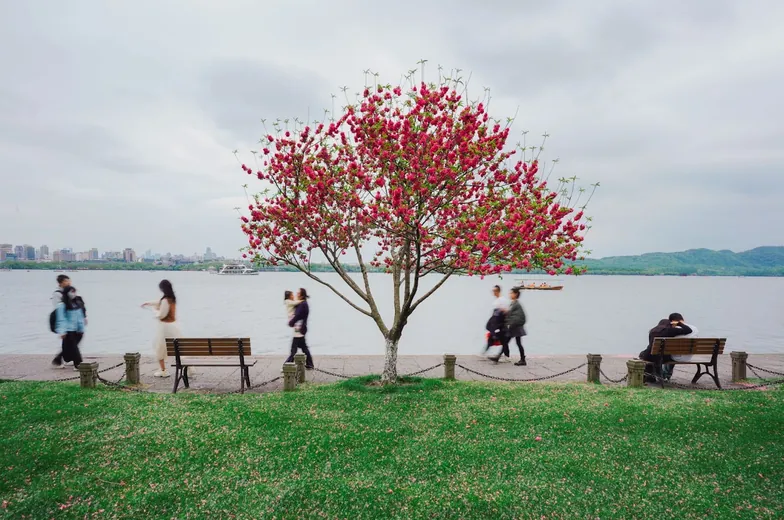
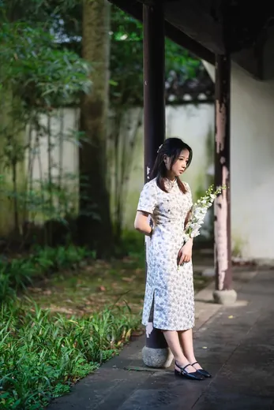
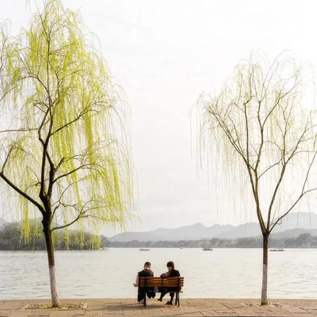
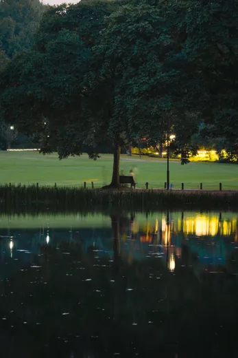
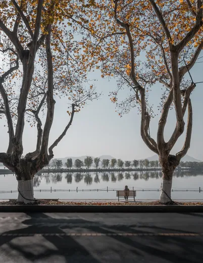
More 路上
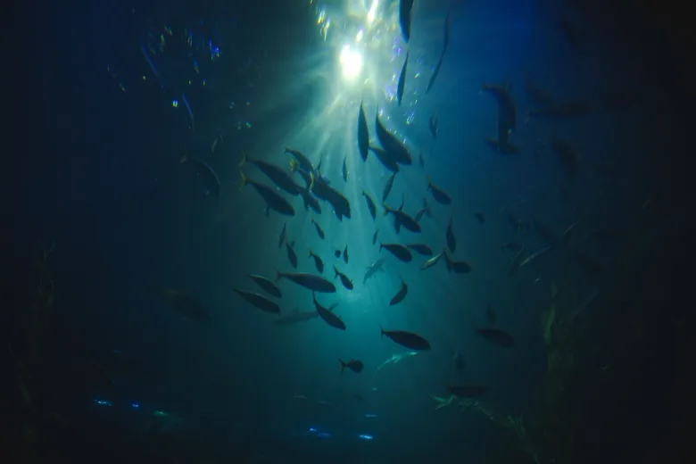
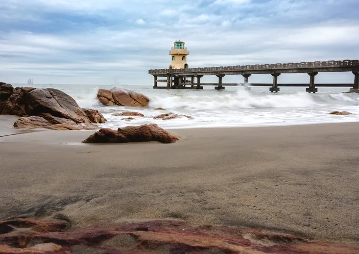